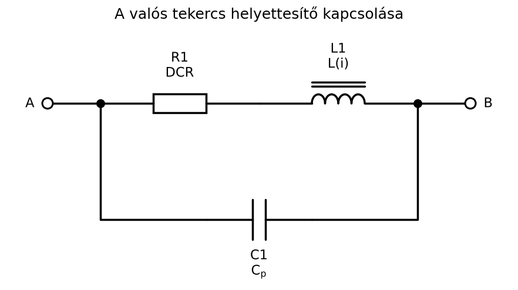
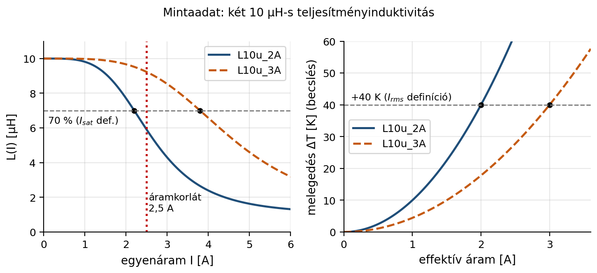
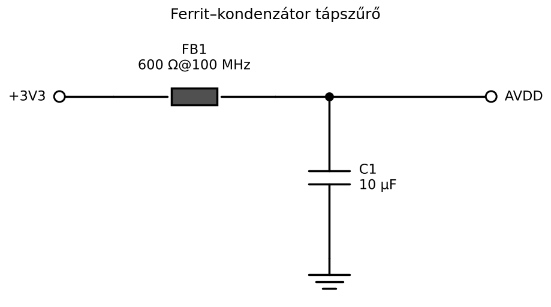
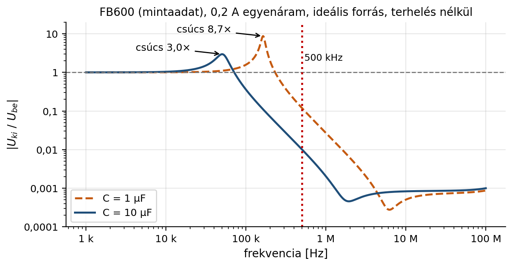

Az ideális tekercs után megnézzük, mit tud egy boltban kapható alkatrész. A végén:
Előfeltétel: A valós kondenzátor: ESR, ESL, önrezonancia, élettartam és Mágneses tér és induktivitás.
A szenzormodul +5V sínjét előállító átalakítóhoz 10 µH-s tekercs kell. A katalógusban két jelölt áll: mindkettő „10 µH”, de az egyik kisebb és olcsóbb. Melyik jó? Az induktivitás értéke erre nem válaszol: a huzal ellenállása, a mag telítése és a melegedés dönt.
A másik feladat: az árammérő erősítő tápja a +3V3 sínről jön, ahol a mikrovezérlő gyors áramlökései zajt keltenek. Egy ferritgyöngy (ferrite bead) a tápágban ígéretes, de a „600 Ω” felirat félrevezető, ha nem tudod, milyen frekvencián, milyen egyenáram mellett és mennyire igaz.
A valós tekercs nem csak induktivitás. A huzalnak ellenállása van, a menetek között és a kivezetések között szórt kapacitás, a magban pedig veszteség és telítés.

Gondolkodj előre. Nagyon nagy frekvencián melyik ág „viszi” a jelet: az induktivitás vagy a párhuzamos kapacitás? Mielőtt továbbolvasol, tippelj; a válasz az önrezonancia szakaszban van.
A ferritgyöngy egy vezetőre húzott (vagy chip tokba épített) ferritmag, kevés menettel. Célja nem az energia tárolása, hanem az, hogy a nagyfrekvenciás zavart hővé alakítsa, miközben az egyenáramú tápáramot szinte akadálytalanul átengedi.
Az előző kondenzátoros alfejezetben már találkoztál a tekercs reaktanciájával, a váltakozó feszültség és áram arányával: , mértékegysége ohm (levezetése: Komplex számok, fazor és impedancia). Dimenzió: . A frekvencia növelésével arányosan nő: egyenáramon nulla, 10 µH 500 kHz-en kb. 31 Ω.
Ha egy elem egyszerre veszteséges (ellenállás jellegű, ) és energiát tároló (reaktancia, ), az impedancia nagysága . Az rész hőt termel, az rész periodikusan felveszi és visszaadja az energiát. (Az előjele induktív jellegnél pozitív, kapacitívnál negatív.) Ezt a képletet most elég elfogadni; a pontos tárgyalás a Váltakozó áramú hálózatszámítás és teljesítmény része.
Definíció. A DCR (DC resistance) a tekercs egyenáramú ellenállása. A rézveszteség , ahol az áram effektív értéke: az az egyenáram, amely ugyanakkora hőt termelne. Dimenzió: . A réz ellenállása nő a hőmérséklettel (kb. 0,39%/K), ezért 100 °C-on a DCR kb. 1,3-szerese a 25 °C-osnak.
Egy áramra, amelynek közepes értéke és háromszög alakú hullámossága (csúcstól csúcsig), (a képlet eredete Szinuszjel, effektív érték és fázis). A magban is keletkezik veszteség, főleg nagy és frekvencia mellett; ezt itt nem számoljuk.
A telítés a pillanatnyi csúcsáramtól függ (a mag azonnal reagál), a melegedés az effektív értéktől (a hő lassan gyűlik). Ezért két külön ellenőrzés kell:
Mindkettőre tartalékot hagyunk (a könyv irányelve: ne közelítsük a határt; a konkrét tartalékot a Derating, tűrésanalízis és megbízhatóság tárgyalja). A szigorúbb határ az, amelyiknél a terhelés aránya () nagyobb. A csúcsáramba az indításkor, rövidzárkor fellépő áramkorlát is beleszámít: telítés közben a tekercs árama megszalad.

Az ábra (mintaadat) azt mutatja, amit az adatlap „L–I görbéje” szokott: a görbe egy ideig lapos, aztán meredeken esik. A jobb oldali görbék becslések: a melegedés kb. az áram négyzetével nő.
A tekercskapacitás és az egy frekvencián egymás hatását kioltja: ez az önrezonancia (self-resonant frequency, SRF), , ahogy a kondenzátornál az ESL-lel (lásd A valós kondenzátor: ESR, ESL, önrezonancia, élettartam). Az SRF alatt a tekercs induktív, a rezonancián nagyon nagy az impedanciája, fölötte kapacitív: a jel a -n megy át, a tekercs már nem fojt. Ezért a Gondolkodj előre kérdés válasza: nagy frekvencián a kapacitás. Hüvelykujjszabály, hogy a kapcsolási frekvencia jóval (nagyságrenddel) az SRF alatt legyen.
Árnyékolt (shielded) tekercsnél a mágneses út a ferritben záródik, a tekercsből kevés szórt tér (stray field) lép ki. Az árnyékolatlan tekercs olcsóbb vagy nagyobb áramot bír azonos méretben, de a szórt tere a környező hurkokban feszültséget indukál (lásd Csatolási mechanizmusok és áthallás). Érzékeny analóg rész közelében árnyékolt tekercset válassz.
Továbbvitt eredmény. Az induktivitás-adatlap olvasása (L, DCR, , , SRF, a szigorúbb határ) a Hatásfok, veszteségek, alkatrészválasztás és kapcsolóüzemű zaj méretezésének és Az adatlap olvasása gyakorlatának alapja.
Egy ferritgyöngy adatlapja tipikusan egyetlen számot ad meg, például „600 Ω @ 100 MHz”. Ez egyetlen pont egy görbén: az impedancia nagysága 100 MHz-en, egyenáram nélkül, szobahőmérsékleten. A teljes görbe három szakaszból áll:
A könyv mintamodellje a három hatást egy soros és egy párhuzamos , , kör együtteseként írja le (az , az egyenárammal csökken):
A mintagyöngy 10 MHz-en kb. 9 Ω ellenállás és 75 Ω reaktancia (tehát induktív), 100 MHz-en 545 Ω ellenállás és 251 Ω reaktancia ( Ω), 1 GHz-en már kapacitív. A 600 Ω tehát nem azt jelenti, hogy a gyöngy „600 Ω-os ellenállás”: egyenáramra csak .
A tápágban folyó egyenáram előmágnesezi a ferritet (DC bias): ugyanúgy a telítés felé tolja, mint a tekercset. A mintaadatban a 2 A névleges áramú, 600 Ω-os gyöngy 100 MHz-es impedanciája 0,5 A-nél 361 Ω-ra, 1 A-nél 223 Ω-ra csökken; 10 MHz-en 75 Ω-ról 1 A-nél 23 Ω-ra. A névleges áram általában melegedési határ: attól még, hogy alatta vagy, a szűrőhatás nagy része elveszhet. Valós adatlapban a „Z–f görbe különböző DC-áramoknál” ábrát keresd; ha nincs, vedd gyanúsnak.
A gyöngy rendszerint kondenzátorral alkot szűrőt:

Kis frekvencián a gyöngy induktív és szinte veszteségmentes. Az és a rezonál: , és ott a kimeneten a zavar nagyobb lehet, mint a bemeneten. A ferrit tehát nem „mindig csillapít”. A rezonanciát az ellenállás fojtja le: a gyöngy -je, a kondenzátor ESR-je, vagy egy szándékosan sorba tett kis ellenállás a kondenzátorral (Elsőrendű szűrők, sávszélesség és felfutási idő után Zajszűrés: RC, LC, ferrit, közös módusú fojtó, árnyékolás mutatja a tervezést).

Továbbvitt eredmény. A ferritgyöngy viselkedése – induktív kis frekvencián, veszteséges a hatásos sávban, egyenárammal gyengül, kondenzátorral rezonálhat – a Zajszűrés: RC, LC, ferrit, közös módusú fojtó, árnyékolás és a Tápintegritás és hidegítés alapja.
| Szempont | Induktivitás | Ferritgyöngy |
|---|---|---|
| cél | energiát tárol és visszaad | zavart elnyel (hővé alakít) |
| tipikus helye | kapcsolóüzemű táp, LC szűrő | tápág és jelvonal MHz feletti zaja |
| frekvencia | kHz–néhány MHz, az SRF alatt | tipikusan 10 MHz – néhány száz MHz |
| veszteség | kicsi a cél | a veszteség a cél |
| adatlap | L, DCR, , , SRF | Z–f görbe, DC-görbe, , névleges áram |
Ha a zavar a kapcsolási frekvencián (500 kHz) és annak alacsony többszörösein van, a ferrit induktivitása (itt kb. 1 µH) kicsi: inkább tekercs vagy nagyobb kondenzátor kell. Ha a zavar 50–200 MHz-es, a ferrit a jó választás.
Adott: (az Mágneses tér és induktivitás számpéldája), a tervezési terhelés 1 A. Két mintaalkatrész:
| L10u_2A | L10u_3A | |
|---|---|---|
| DCR | 80 mΩ | 45 mΩ |
| (30%) | 2,2 A | 3,8 A |
| (+40 K) | 2 A | 3 A |
Normál üzemben mindkettő megfelel. Tegyük fel, hogy az átalakító áramkorlátja 2,5 A-es csúcsnál avatkozik be (példaadat), és indításkor ezt eléri. A kisebb tekercsnél : a telítési határ sérül, az induktivitás 5,9 µH-re esik, a hullámosság közel megduplázódik. A nagyobbnál 66%, az induktivitás 9,2 µH. A választás a L10u_3A: itt a telítés a szigorúbb feltétel, nem a melegedés.
Ferrit-ellenőrzés. A tápszűrő 500 kHz-en: a gyöngy induktív, 0,2 A-nél , . A 10 µF-os kondenzátor reaktanciája . A kimenet a bemenet kb. -szerese, vagyis a zavar kb. századrészére csökken. Rezonancia: , itt viszont erősít. Egyenáramú veszteség: feszültségesés.
import sys; sys.path.insert(0, "code")
import numpy as np
from elkit import parts, units
di = 7.0 * (5 / 12) / 500e3 / 10e-6 # hullámosság az előző alfejezetből
i_eff = np.sqrt(1.0 + di**2 / 12)
for nev in ["L10u_2A", "L10u_3A"]:
tek = parts.inductor(nev) # mintaadat
for csucs in (1.0 + di / 2, 2.5):
c = tek.check(csucs, i_eff)
print(f"{nev} I_cs={csucs:.2f} A: sat {c['sat_load']:.0%}, rms {c['rms_load']:.0%}, "
f"L={c['l_at_peak'] * 1e6:.1f} µH, P={c['loss'] * 1e3:.0f} mW, "
f"{'rendben' if c['ok'] else 'NEM jó'}")
fb = parts.ferrite("FB600") # mintaadat
print(" f I=0 0,5 A 1 A |Z|")
for f in (1e6, 1e7, 1e8, 1e9):
z = [abs(fb.impedance(f, i)) for i in (0.0, 0.5, 1.0)]
print(f"{units.fmt(f, 'Hz'):>7} " + " ".join(f"{v:7.1f}" for v in z) + " Ω")
z = fb.impedance(1e8)
print(f"100 MHz, I=0: R = {z.real:.0f} Ω, X = {z.imag:.0f} Ω")
f = np.logspace(3, 7, 4001) # ferrit + 10 µF, 0,2 A egyenáram
z_f = fb.impedance(f, 0.2)
z_c = parts.capacitor_impedance(f, 10e-6, esr=0.005, esl=0.8e-9)
h = np.abs(z_c / (z_f + z_c)) # a komplex osztó nagysága (el033)
print(f"csúcs: {h.max():.2f}-szoros {units.fmt(f[h.argmax()], 'Hz')} körül")
print(f"500 kHz-en: {h[np.searchsorted(f, 5e5)]:.4f}")L10u_2A I_cs=1.29 A: sat 59%, rms 51%, L=9.5 µH, P=82 mW, rendben
L10u_2A I_cs=2.50 A: sat 114%, rms 51%, L=5.9 µH, P=82 mW, NEM jó
L10u_3A I_cs=1.29 A: sat 34%, rms 34%, L=9.9 µH, P=46 mW, rendben
L10u_3A I_cs=2.50 A: sat 66%, rms 34%, L=9.2 µH, P=46 mW, rendben
f I=0 0,5 A 1 A |Z|
1 MHz 7.5 3.9 2.3 Ω
10 MHz 75.3 39.2 23.4 Ω
100 MHz 600.1 361.4 222.9 Ω
1 GHz 157.9 157.5 156.0 Ω
100 MHz, I=0: R = 545 Ω, X = 251 Ω
csúcs: 2.95-szoros 50.5 kHz körül
500 kHz-en: 0.0102A rezonancia a kézi becslésnél (52 kHz) kicsit lejjebb, 50 kHz-nél van, és kb. háromszoros erősítést ad. A 1 GHz-es sorban az egyenáram hatása kicsi: ott a kapacitás dominál, amelyet az áram nem változtat meg.
A ferritgörbe ábrájának (Valós induktivitás és ferritgyöngy-ferrit-gorbe) interaktív lapján válassz gyöngyöt, és állítsd az egyenáramot.
A valós tekercs DCR-rel, tekercskapacitással és telítéssel írható le. A rézveszteség ; a telítési áramot a csúcsárammal (az áramkorlátig), a melegedési áramot az effektív árammal kell összevetni, és a szigorúbb a döntő; a definíciók adatlapfüggők. Az SRF fölött a tekercs kapacitív; árnyékolt típusnak kisebb a szórt tere. A ferritgyöngy kis frekvencián induktív, a hatásos sávban veszteséges ellenállás, nagyon nagy frekvencián kapacitív; a „600 Ω @ 100 MHz” egyetlen pont, egyenáram mellett (1 A-nél kb. 220 Ω) romlik. Kondenzátorral rezonálhat (kb. háromszoros csúcs 10 µF-dal). Energiát tárolni tekercset, nagyfrekvenciás zavart elnyelni ferritet válassz.
25 °C: . 100 °C: a DCR , tehát kb. 194 mW.
: 500 kHz-en , 5 MHz-en .
, . , . Mindkettő a határ alatt van, de szinte tartalék nélkül; a szigorúbb a telítés. Nagyobb áramú tekercs kell.
A modellből 0,8 A-nél 100 MHz-en:
for nev in ["FB120", "FB600", "FB1000"]:
g = parts.ferrite(nev)
print(f"{nev}: {abs(g.impedance(1e8, 0.8)):.0f} Ω, esés {0.8 * g.r_dc * 1000:.0f} mV, "
f"áram/névleges {0.8 / g.i_rated:.0%}")FB120: 85 Ω, esés 24 mV, áram/névleges 27%
FB600: 279 Ω, esés 80 mV, áram/névleges 40%
FB1000: 284 Ω, esés 200 mV, áram/névleges 80%Az FB600 ugyanazt az impedanciát adja, mint az FB1000, de kisebb feszültségeséssel és nagyobb áramtartalékkal: az FB600 a jó választás.
z_f = fb.impedance(f, 0.2)
for esr in (0.005, 0.1, 0.33, 1.0):
z_c = parts.capacitor_impedance(f, 10e-6, esr=esr, esl=0.8e-9)
h = np.abs(z_c / (z_f + z_c))
z1 = fb.impedance(1e7, 0.2)
zc1 = parts.capacitor_impedance(1e7, 10e-6, esr=esr, esl=0.8e-9)
print(f"ESR {esr:5.3f} Ω: csúcs {h.max():.2f}, 10 MHz: {abs(zc1 / (z1 + zc1)):.4f}")ESR 0.005 Ω: csúcs 2.95, 10 MHz: 0.0008
ESR 0.100 Ω: csúcs 1.68, 10 MHz: 0.0019
ESR 0.330 Ω: csúcs 1.13, 10 MHz: 0.0057
ESR 1.000 Ω: csúcs 1.00, 10 MHz: 0.0170A nagyobb ESR lefojtja a rezonanciát, de nagyfrekvencián rosszabb a csillapítás. Kompromisszum: kis ESR-ű kerámia mellé párhuzamosan egy csillapító ág (nagyobb kondenzátor soros ellenállással), lásd Zajszűrés: RC, LC, ferrit, közös módusú fojtó, árnyékolás.
Az 1 µF és a kb. 1 µH-s gyöngy rezonanciája
,
a számítás szerint (terhelés nélkül) kb. 8–9-szeres csúccsal: a 150 kHz
körüli zavar felerősödne. Javaslat: nagyobb kondenzátor
(pl. 10 µF) és csillapítás, vagy a ferrit elhagyása és helyette
ellenállásos RC szűrő, ha az analóg táp árama kicsi. Ellenőrzés: a fenti
kóddal 10e-6 helyett 1e-6-ot írva. Háttér:
[S-AOE], [S-OTT], [S-MURATA].